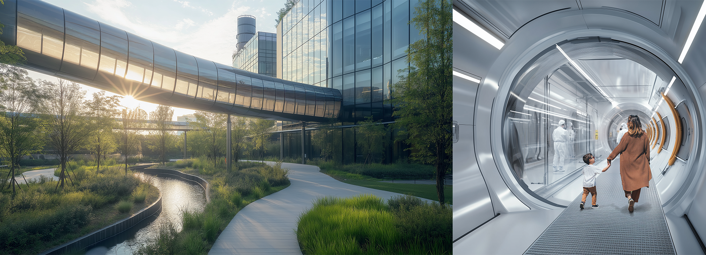
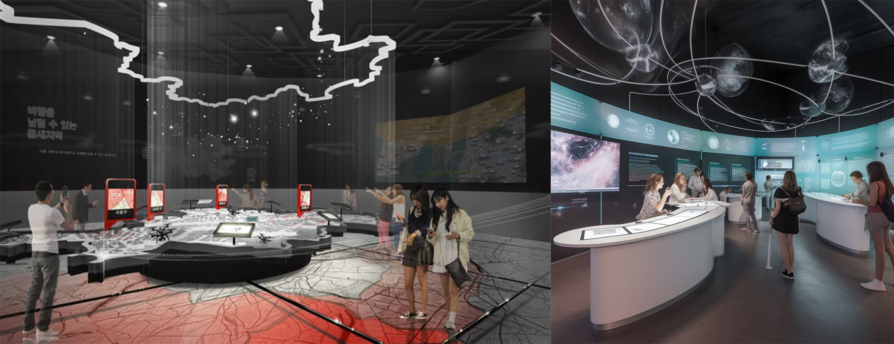
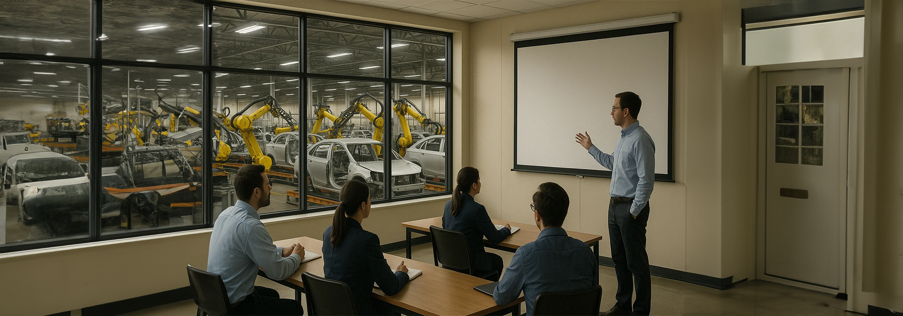
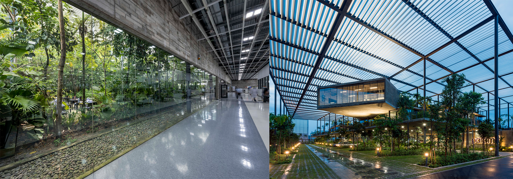

This survey aims to understand how people experience industries through its architectural spaces—such as visits to factories, research facilities, or even seeing them in the cityscape—and how such experiences may influence awareness, understanding, and career interests.
Your input will contribute to research focused on designing more accessible, educational and inspiring industrial environments.
Basic information
Exposure and Impressions of Industry
Exposure and Impressions of Industry
Design Concepts for Experiencing Industry through Architecture
This section presents a series of architectural ideas aimed at making industrial spaces more visible, accessible, and engaging to the public.
For each idea, please review the accompanying image and description. Then, rate how effective you believe the idea would be in making industry more welcoming, educational, and publicly engaging.
1. Bridge Tube Walkway (Independent Public Viewing Zone)

An enclosed, elevated or side-mounted walkway that allows visitors to visually observe operations inside the facility without entering the work zone. It requires no permits or supervision and allows full independence within a controlled space.
2. Public Exhibition at Facility Entry

A permanent exhibition area near the entrance that explains the processes, products, and societal relevance of the industry—designed for casual visitors, students, or guided tours.
3. Training Centre Overlooking Operational Areas

A learning or orientation space integrated within the facility that has visual access to research labs or manufacturing zones—offering students or trainees a firsthand look into real-time industrial work.
4. Contrasting Nature with Industry

Incorporating green elements such as landscaped courtyards, water features, and green walls within and around the facility creates a striking contrast between nature and industry. This approach helps make the environment more welcoming, promotes well-being, and reduces visual and psychological strain. (Image shown is Paramit's Factory in a Forest by Design Unit Architects)
5. Iconic Landmark Architecture
Designing part of the facility—such as the entrance tower, auditorium, or public zone—with a bold, sculptural form to make the building a recognizable landmark and spark public curiosity and pride.
Section 4 — Feedback
5
A copy of your response has been sent to your email id. If it’s not in your Inbox, please check Spam or Promotions.